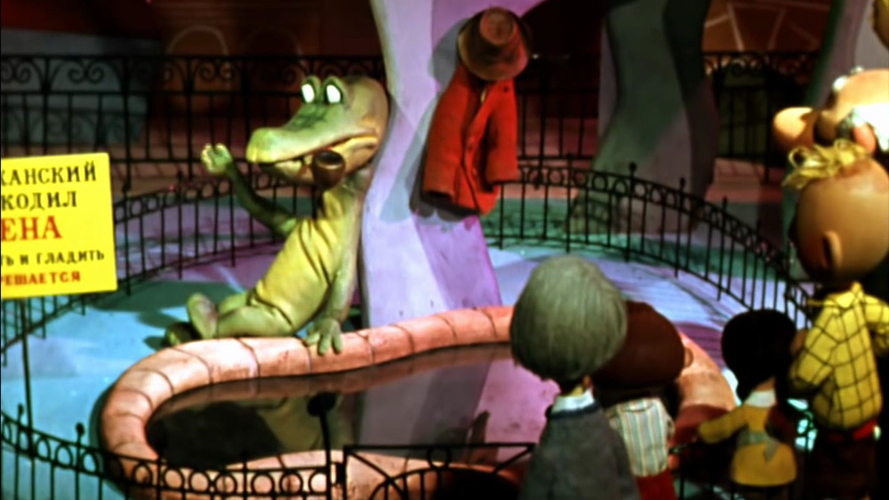

About Gena
Gena is a lonely Soviet crocodile. He works at the zoo as an exhibitionist. In his spare time, he plays chess against himself in his poorly lit apartment. He placed a want ad for friends, and against all odds, it was successful.
About Gena and his Friends
Friends
Hobbies
- Concertina
- Solo Chess
- Bubble Pipe